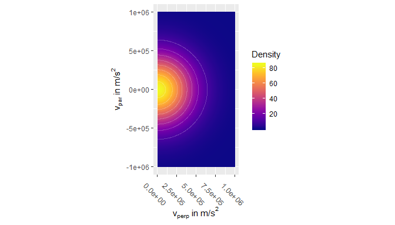
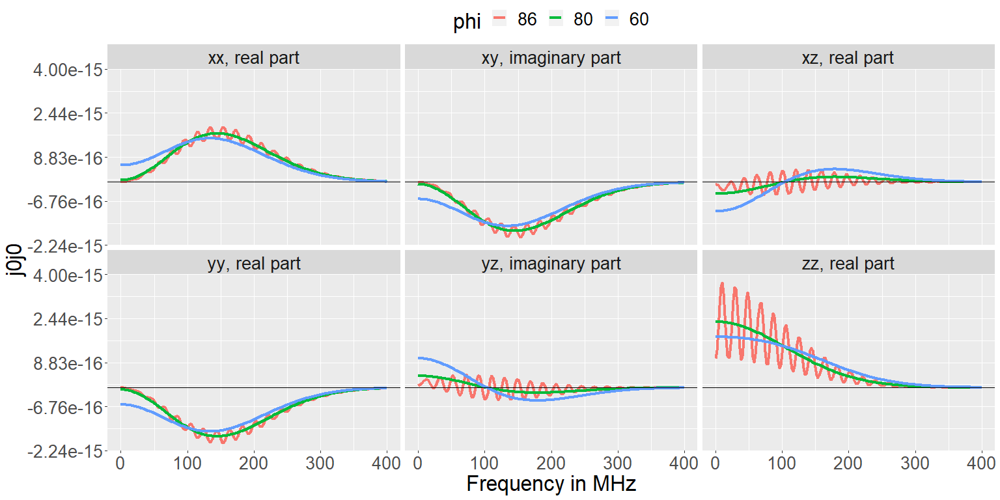

The goal of j0j0r is to calculate the unscreened current correlation tensor of the plasma fluctuation model of Bindslev 1996, Journal of Atmospheric and Terrestial Physics, 58, 983.
The code is meant to be distribution-agnostic, i.e. it should be able to handle any reasonable form of the momentum distribution. Integrals over the momentum distribution are calculated numerically. Analytic solutions, possible only in special cases, are not used/supported.
The package contains functions to set up a number of momentum distribution types:
An isotropic Maxwellian distribution.
A bi-Maxwellian distribution, with drift along the magnetic field (z-direction).
A generalized Lorentzian / Kappa distribution.
A ring-distribution.
A bivariate normal distribution.
A slowdown distribution: an isotropic fast-ion slowdown with transport modifications as formulated by George J. Wilkie . See https://arxiv.org/abs/1808.01934v2.
Apart from those, users are free to input new distribution functions of their own design.
Install the development version from GitHub with:
if (!require("devtools")) {
install.packages("devtools")
}
devtools::install_github("mstejner/j0j0r")The package is not yet on CRAN.
The example below shows the basic work flow for a Maxwellian distribution. The package vignette gives a more thorough introduction and a discussion of the effects of strongly non-Maxwellian distributions. It can be viewed with:
And on https://mstejner.github.io/j0j0r/ under articles.
To run the example below, first attach the j0j0r and magrittr packages:
The code is parallelized using the future and furrr packages. To make use of the parallelization, first set a plan for the future package. Different plans will be appropriate for different operating systems. On Windows it could be:
A Maxwellian distribution can be set up with:
maxwellian_deuterium <- maxwellian_setup(
n = 4e19,
T_eV = 2000,
A = 2,
Z = 1,
name = "maxwellian"
)It can be evaluated and plotted with:
calculate_distribution_data_frame(
particles = list(maxwellian_deuterium = maxwellian_deuterium),
v_par = seq(-1e6, 1e6, length.out = 300),
v_perp = seq(0, 1e6, length.out = 300)
) %>%
plot_dist() +
ggplot2::theme(text = ggplot2::element_text(size = 12))
The elements of the current correlation tensor can now be calculated with the j0j0 funnction. Here assuming a magnetic field of 2.5 T, a wave vector length corresponding to 3 mm waves, resolved angles of 60 and 86 degrees, and frequencies between 0 and 400 MHz.
maxwellian_example <- j0j0(
k = 2 * pi / (j0j0r::const$c / 100e9),
phi = c(60, 86),
frequencies = seq(0, 400e6, by = 2e6),
directions = c("x", "y", "z"),
B = 2.5,
particles = list(maxwellian = maxwellian_deuterium),
integration_method = "hcubature"
)The output is a tibble with results (j0j0) for every combination of all values of the input variables:
dplyr::glimpse(maxwellian_example)
#> Observations: 2,412
#> Variables: 10
#> $ k <dbl> 2095.845, 2095.845, 2095.845, 2095.845, 209...
#> $ phi <dbl> 60, 86, 60, 86, 60, 86, 60, 86, 60, 86, 60,...
#> $ frequency <dbl> 0.0e+00, 0.0e+00, 2.0e+06, 2.0e+06, 4.0e+06...
#> $ B <dbl> 2.5, 2.5, 2.5, 2.5, 2.5, 2.5, 2.5, 2.5, 2.5...
#> $ particle <chr> "maxwellian", "maxwellian", "maxwellian", "...
#> $ integration_method <chr> "hcubature", "hcubature", "hcubature", "hcu...
#> $ directions <chr> "xx", "xx", "xx", "xx", "xx", "xx", "xx", "...
#> $ A <dbl> 2, 2, 2, 2, 2, 2, 2, 2, 2, 2, 2, 2, 2, 2, 2...
#> $ Z <dbl> 1, 1, 1, 1, 1, 1, 1, 1, 1, 1, 1, 1, 1, 1, 1...
#> $ j0j0 <cpl> 5.984923e-16+0i, 5.095825e-18+0i, 5.990463e...And the results can be plotted with:
